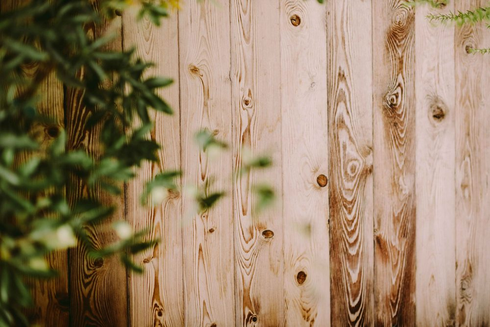
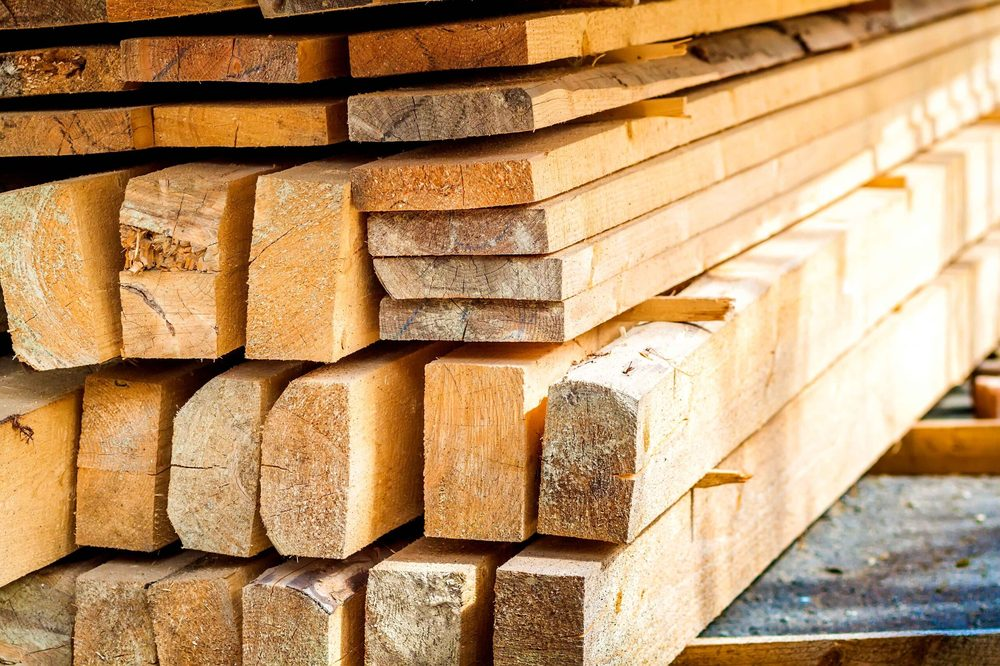

In This Guide
- Constant moisture is the main enemy of a New Orleans wood fence, and it works through rot, mold, and insects.
- Longevity starts at installation: the wood you choose, how deep the posts sit, and how well water drains away from them.
- A simple four-season routine of inspecting, cleaning, refinishing, and storm prep catches problems while they are still small.
- Pressure-treated lumber resists rot and insects, but it needs safe handling and still benefits from a finish.
A wood fence in New Orleans works against the climate every day. Warm air holds a lot of moisture, rain arrives in heavy bursts, and the ground stays damp long after the storm has passed. Wood that gets this treatment without care can start to fail within a few seasons.
The goal of this guide from Big Easy Fence is different from a one-time fix. It lays out a long-term plan for keeping a wood fence sound: what moisture does, what to choose and build in from the start, and what to do each season.
What Moisture Does to a Wood Fence
Humidity attacks a fence in three ways, and they feed each other.
- Rot. Fungi break down wood that stays wet. Posts and the bottoms of boards go first because they touch the ground and hold water.
- Mold and mildew. These grow on damp surfaces, stain the wood, and trap even more moisture against it.
- Insects. Termites and other wood-boring insects prefer soft, damp wood, so a rotting fence invites them in.

Build Longevity Into the Installation
Most of a fence's lifespan is decided at installation. A few choices made early save the most work later.
Choose Rot-Resistant Wood
Cedar and cypress resist decay naturally, and pressure-treated lumber is made to resist rot and insects. Cedar and cypress often cost more up front but hold up well, while treated pine is a common budget-friendly option that still needs a finish.
Set Posts for Drainage
Posts sit in the wettest part of the fence. Setting them in concrete with a slight slope at the top sheds water instead of holding it, and gravel at the base of the hole helps water drain away.
Keep Boards Off the Ground
A small gap between the bottom of the boards and the soil stops wood from wicking up moisture. It also slows the decay that starts where boards meet mulch or dirt.
The Four-Season Routine
A fence does not need constant attention, just the right attention at the right time. This schedule fits Louisiana weather.
Inspect and Clean
Check posts, rails, and boards for soft spots. Wash off mildew and algae before summer heat sets in.
Protect From Sun
Check the finish for wear and touch up bare areas. Trim plants back so air can move along the fence.
Prepare for Storms
Tighten loose fasteners, brace weak spots, and clear debris. Recheck the fence after any storm passes.
Repair and Recoat
Use a mild, dry day to replace damaged boards and reseal the fence so it is ready before warm weather returns.
Twice a year is the minimum for a full walk-around, and after any major storm is even better. For the step-by-step process on refinishing, see our guide to how to seal and weatherproof a wooden fence.
Stopping Rot Before It Spreads
Spot It Early
Poke suspect wood with a screwdriver. Healthy wood resists, while rotting wood feels soft and crumbles. Look closely at the base of posts and the bottom of boards. Catching a single soft board in time can spare you from replacing a whole section. Our guide on how to prevent rot in wooden fences goes deeper.
Fix Drainage
Standing water at the base of a fence is an invitation for rot and moss. Grade the soil so water flows away from the posts, and consider a French drain if water collects along a fence line. Downspouts and sprinklers that soak the same section again and again are a common hidden cause.
Replace Instead of Patching Soft Wood
Screws and fillers cannot rescue wood that has rotted through. Cut out and replace the damaged piece so the weak spot does not spread. For bigger jobs, our fence repair team can handle the work.
Where Pressure-Treated Lumber Fits
Pressure-treated lumber is forced full of preservatives that help it resist rot and insects, which makes it a strong match for damp conditions and for posts in particular.

- Handle it safely. Wear gloves and eye protection, and a mask when cutting, and follow the handling instructions from the manufacturer.
- Mind the environment. The preservatives are chemicals, so keep sawdust and scraps away from garden beds and waterways and dispose of them properly.
- Still finish it. Treated wood resists rot but can still crack, warp, and gray in the sun, so it benefits from a sealer or stain.
Treated lumber and a good finish slow the clock, but they do not stop it. The fences that last are the ones that get looked at every season.
Keep Your Fence Going for the Long Haul
Preserving a fence in New Orleans comes down to a few habits: choose wood that resists moisture, control drainage, refinish before the wood is bare, and inspect on a schedule. Each one is simple, and together they add real years to a fence.
If you would like help with a new fence or a repair, talk to us about your residential fencing project and we can give you an estimate.
Common Questions
What Is the Best Way to Weatherproof a Wood Fence?
How Often Should I Maintain My Wood Fence?
Can Pressure-Treated Lumber Prevent Rot?
How Do Seasons Affect a Wood Fence in New Orleans?
Do I Need a Professional to Preserve My Wood Fence?
Want a Wood Fence Built to Last Here?
Tell us about your fence or your plans, and we can talk through wood choices, post depth, and maintenance for Louisiana conditions.